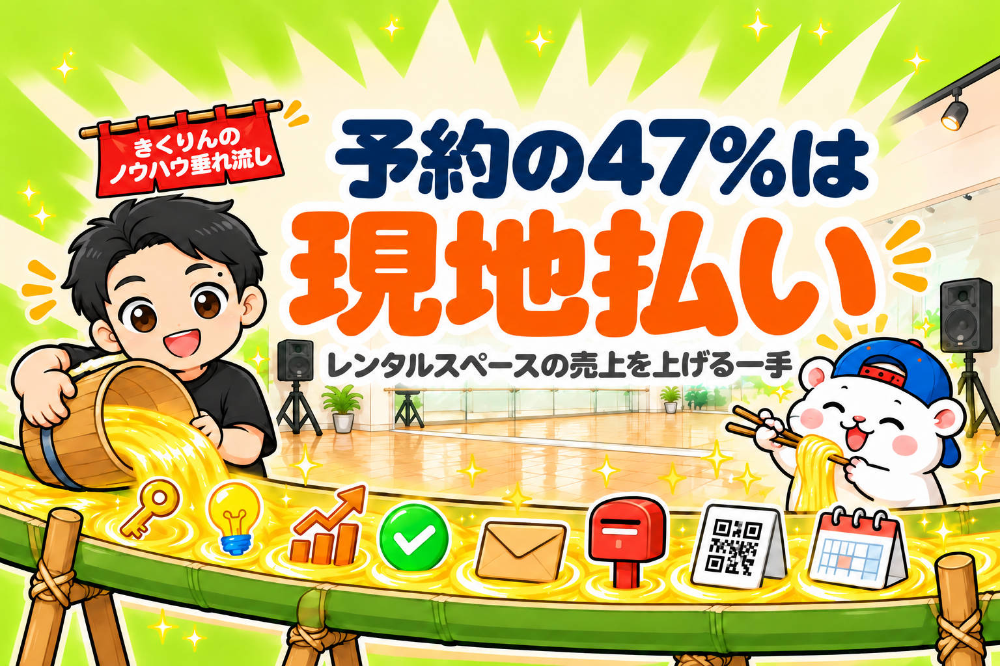

現地払いは、レンタルスペースの売上を上げる「カード」の1つです。
ぼくのレンタルスタジオでは、10月に現地払いをやめました。
すると、やめた店だけ、予約が1〜2割へりました。
| 店 | 予約時間の変化 |
|---|---|
| 現地払いをやめた店A | 15%へった |
| 現地払いをやめた店B | 12%へった |
| 現地払いをやめた店C | ほぼ同じ |
| もともと現地払いなしの店 | ほぼ同じ |
一方で、未払いを追いかける手間は、なくなりました。
現地払いには、いい面と悪い面があります。
なので、入れる・入れないを決めつけなくて大丈夫です。
状況に応じて使えるカードとして、知っておくことが大事です。
この記事では、次の3つを書きます。
- 現地払いのメリット3つ・デメリット3つ
- 現地払いの使いどき
- 使うなら、守るべき安全の対策3つ
この記事を書いた人

この記事は、23店舗を出して、現地払いも事前のカード払いも両方やってきたきくりんが書いています。
現地払いをやめる前は、予約の半分近くが現地払いの店もありました。
1. 現地払いとは
現地払いは、予約のときではなく、当日お店で払ってもらう方法です。
例えば、ぼくの店ではこうしていました。
- 現金は、封筒に入れてポストへ
- PayPayは、店内のQRコードを読んでもらう
予約サイトでカードを登録しなくていいので、お客さまは気が楽です。
そのかわり、お金を受け取るのは、お店にだれもいない時間です。
2. やめたら、予約はどうなったか
現地払いをやめると、予約はへります。
ぼくの店では、やめた店だけ、予約の時間が1〜2割へりました。
もともと現地払いがない店は、へっていません。
やめる前は、予約の47%が現地払いでした。
ほぼ半分のお客さまが、現地払いを選んでいたことになります。
現地払いをよく使っていた常連さんの中には、やめたあと、来なくなった人もいます。
それだけ、現地払いを選ぶお客さまは多いということです。
3. 現地払いのメリット3つ
① 予約のハードルが下がる
そもそも、クレジットカードを持っていない人は多いです。
20代では、4人に1人が持っていません。
| 年代 | カードを持っていない人 |
|---|---|
| 20代 | 27% |
| 30代 | 25% |
| 40代 | 26% |
| 50代 | 17% |
| 60代 | 12% |
出典: クロス・マーケティング「クレジットカードに関する調査(2026年)」全国の20〜69歳1,100人
それに、20代がいちばん使う支払い方法は、QRコード払いです。
現金でもカードでもありません。
| 支払い方法 | 20代でいちばん使う人 |
|---|---|
| QRコード払い | 33% |
| 現金 | 32% |
| クレジットカード | 30% |
| 電子マネー | 6% |
出典: クロス・マーケティング「クレジットカードに関する調査(2026年)」全国の20〜69歳1,100人
カードを登録したくない人や、ネットで払うのが不安な人もいます。
「当日、現金かPayPayで払えばいい」なら、気軽に予約できます。
とくに、学生さんなど若いお客さまが多い店ほど、効きやすいはずです。
② はじめての人が予約しやすい
はじめての店で、先にお金を払うのは不安です。
現地払いなら、行ってみてから払えます。
③ 常連さんが続けやすい
いつも現地で払っている人は、払い方が変わると、手間に感じます。
払い方が変わったのをきっかけに、来なくなる人もいます。
4. 現地払いのデメリット3つ
ぼくの店の中に貼ったお知らせ(実物・店名などはぼかしています)
① 未払いが出る
現地払いでいちばん困るのは、払ってもらえないことです。
うっかり払い忘れる人もいます。
はじめから払う気がない人もいます。
払わない人は、連絡しても返事がないことが多いです。
何度も連絡して、追いかけて、それでも払ってもらえない。
本当に大変です。
そして何より、このやり取りで、自分の気持ちがすり減ります。
お金より、こちらのほうがつらいかもしれません。
② キャンセル料が取りにくい
事前のカード払いなら、キャンセル料は自動で引かれます。
現地払いは、あとから払ってもらうしかありません。
来なかった人のキャンセル料も、①と同じく追いかけることになります。
③ 照合の手間と、現金のリスク
だれが払って、だれが払っていないか。
予約と、ポストのお金と、PayPayの通知を、1件ずつ突き合わせます。
とくに大変なのが、店内に貼ったQRコードでのPayPay払いです。
だれが払ったかが分かりません。
分かるのは、どの店で、何時に払ったかだけです。
その時間に予約していた人を探して、1件ずつ照合します。
毎日お店に行けるわけでもないので、気づくのも遅れがちです。
予約のときも当日も払ってしまう、二重払いも起きました。
お店にだれもいない時間に、現金を受け取る心配もあります。
ぼくの店は数が多いので、この手間とリスクをへらすために、やめました。
5. 現地払いの使いどき
| 使いどき | 使わなくていいとき |
|---|---|
| 予約が伸び悩んでいる | 予約がもう埋まっている |
| 店の数が少ない | 店が多く、回りきれない |
| 家や職場から近い | 遠くて、回収に行けない |
| 多少の未払いは目をつむれる | 未払いを1件も出したくない |
使いどきは、予約が伸び悩んでいるときです。
予約のハードルが下がるぶん、予約がふえる見こみがあります。
とくに、店が1〜2つで、こまめに見に行ける人。
多少の手間と未払いに目をつむれるなら、売上を上げる一手になります。
逆に、予約がもう埋まっているなら、使わなくて大丈夫です。
手間とリスクだけがふえます。
ぼくの店は、未払いと手間のほうが重くなったので、やめました。
6. 使うなら、守るべき安全の対策3つ
いま、無人の冷凍食品の販売店で、お金を払わずに持ち去る事件がニュースになっています。
レンタルスペースも、だれもいない時間にお金を受け取る点は同じです。
使うなら、この3つは守ってください。
- 現金はポストに入れてもらい、ポストは動かないように固定する
- 防犯カメラをつけて、「作動中」の表示を出す
- 払い忘れが多い人は、利用をお断りするか、事前のカード払いだけにする
いちばん大事なのは、3です。
払い忘れが何度も続く人は、正直います。わざと払わない人です。
何度も追いかけるより、次からの利用をお断りするか、事前のカード払いだけにしてもらいましょう。
そのほうが、ずっと気持ちが楽です。
7. ぼくがやめたあとに、やっていること
ぼくの店のホームページに出したお知らせ(実物・店名などはぼかしています)
現地払いをやめたあとも、お客さまに戻ってきてほしいのは同じです。
そこで、現地払いだったお客さまに、メールを送りました。
「PayPayもカードも、予約の画面で使えます」という案内です。
やめるなら、お客さまへの案内までがセットです。
お店のホームページ、店内のお知らせ、メールの3つで伝えると、迷う人がへります。
まとめ
現地払いは、予約をふやすカードです。
でも、未払いという大きなデメリットもあります。
大事なことは、この3つです。
- 予約が伸び悩んだときに使える一手として、知っておく
- 予約が埋まっているなら、事前払いだけで十分
- 使うなら、防犯と「払い忘れが多い人は前払いだけ」をセットにする
あなたの店の予約の状況で、カードを切るかを決めてみてください。
▼レンタルスペースの始め方は、ぜんぶ1冊にまとめてあります
物件選び・収支の計算・開業・運営・拡大まで。累計23店舗の経験を、全9部と付録15点のWeb教材に書きました。
第0部は登録なしで全文読めます。
『レンタルスペース経営の教科書』


販売価格は3部売れるごとに2,000円ずつ値上がりします（上限あり）。内容・最新価格は販売ページをご確認ください。